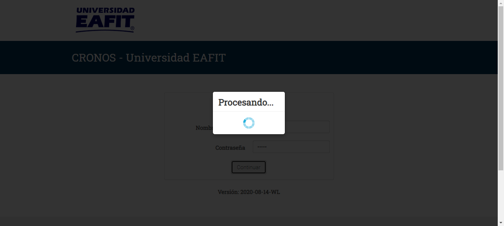
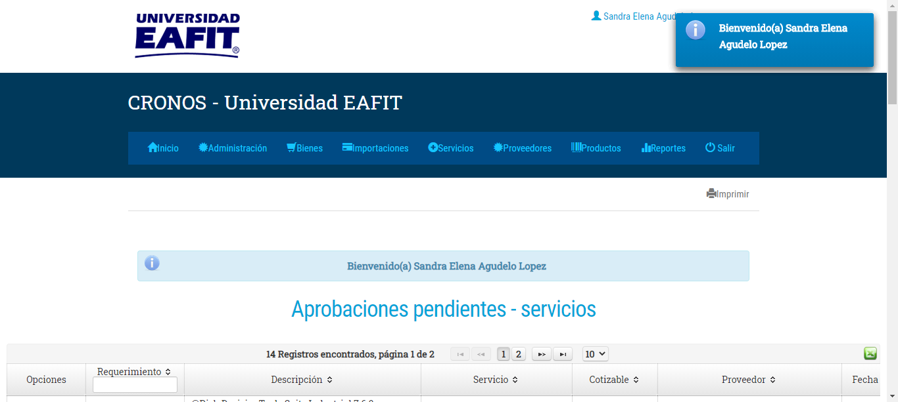
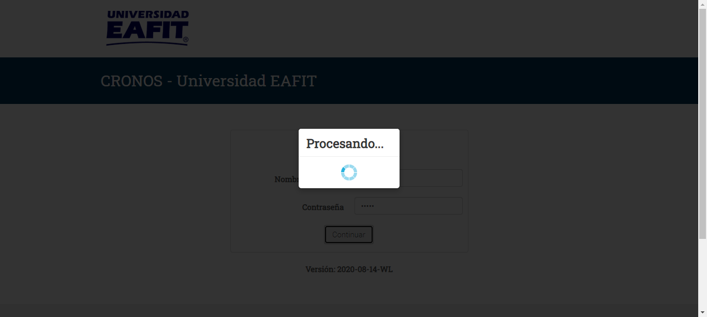
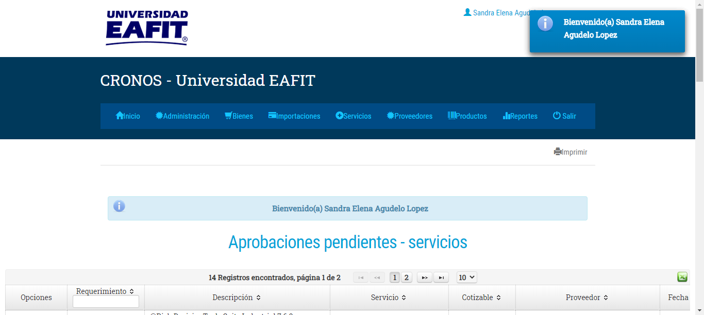
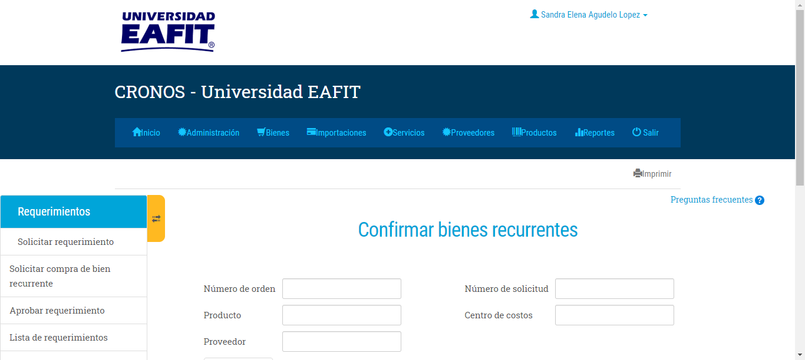
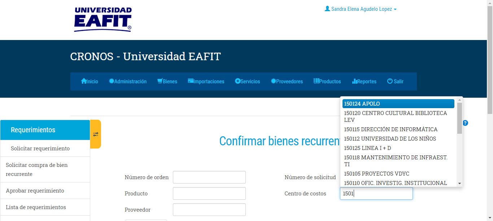
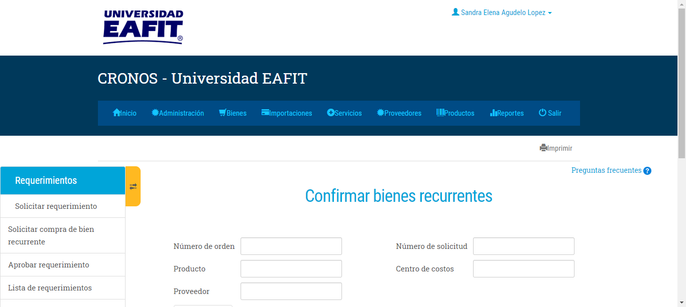
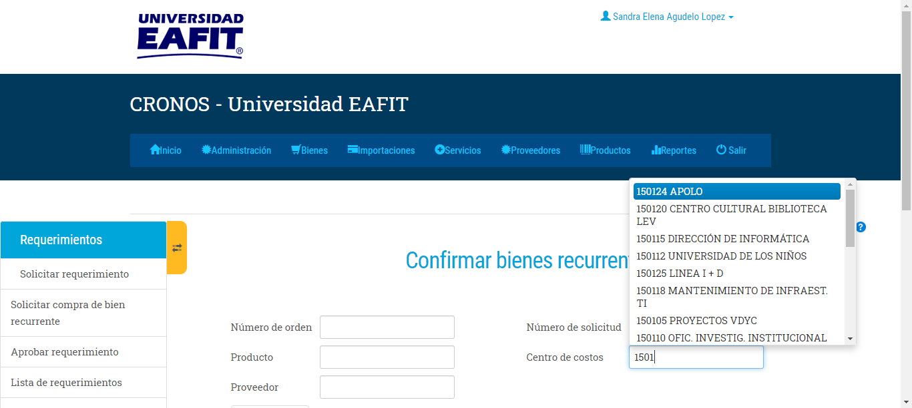

The following error occurred: no such element: Unable to locate element: {"method":"xpath","selector":"/html/body/div[10]/ul/li[1]"}
(Session info: chrome=85.0.4183.83)
(Driver info: chromedriver=2.44.609538 (b655c5a60b0b544917107a59d4153d4bf78e1b90),platform=Windows NT 10.0.17763 x86_64) (WARNING: The server did not provide any stacktrace information)
Command duration or timeout: 0 milliseconds
For documentation on this error, please visit: http://seleniumhq.org/exceptions/no_such_element.html
Build info: version: '3.11.0', revision: 'e59cfb3', time: '2018-03-11T20:26:55.152Z'
System info: host: 'PTOF67355', ip: '192.168.1.4', os.name: 'Windows 10', os.arch: 'amd64', os.version: '10.0', java.version: '1.8.0_191'
Driver info: org.openqa.selenium.remote.RemoteWebDriver
Capabilities {acceptInsecureCerts: false, acceptSslCerts: false, applicationCacheEnabled: false, browserConnectionEnabled: false, browserName: chrome, chrome: {chromedriverVersion: 2.44.609538 (b655c5a60b0b54..., userDataDir: C:\Users\azapat29\AppData\L...}, cssSelectorsEnabled: true, databaseEnabled: false, goog:chromeOptions: {debuggerAddress: localhost:49921}, handlesAlerts: true, hasTouchScreen: false, javascriptEnabled: true, locationContextEnabled: true, mobileEmulationEnabled: false, nativeEvents: true, networkConnectionEnabled: false, pageLoadStrategy: normal, platform: XP, platformName: XP, rotatable: false, setWindowRect: true, takesHeapSnapshot: true, takesScreenshot: true, unexpectedAlertBehaviour: ignore, unhandledPromptBehavior: ignore, version: 85.0.4183.83, webStorageEnabled: true}
Session ID: 870da59f6b681811f048376f20763fe5
*** Element info: {Using=xpath, value=/html/body/div[10]/ul/li[1]}
For documentation on this error, please visit: http://seleniumhq.org/exceptions/no_such_element.html
Build info: version: '3.11.0', revision: 'e59cfb3', time: '2018-03-11T20:26:55.152Z'
System info: host: 'PTOF67355', ip: '192.168.1.4', os.name: 'Windows 10', os.arch: 'amd64', os.version: '10.0', java.version: '1.8.0_191'
Driver info: driver.version: unknown
co.edu.eafit.pageObject.CronosPageO.ingresadatbienrec(CronosPageO.java
:299)
co.edu.eafit.Steps.CronosSteps.ingresadatosbienrecur(CronosSteps.java
:99)
co.edu.eafit.definitions.CronosDefinition.elIngresaLosDatosDelBienesRecurrente(CronosDefinition.java
:133)
cucumber.runner.Runner.runPickle(Runner.java
:80)
 



 
ERROR" width="1366"/>

ERROR" width="1366"/>